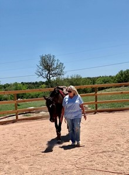

Client Testimonials
Catherine

I suffer from anxiety and depression caused by being in mentally and physically abusive relationships. Slowly over time I seemed to have lost my sense of self-worth and confidence. Working 30 years in the law enforcement field I was exposed to so much of the negative aspects of life. I lost my own desires and ability to live a healthy, productive life. I retired early after mentally being unable to continue in my line of work and to effectively help others. Having zero experience with horses I was hesitant and quite honestly a little scared to do equine therapy.
With Stephanie's help at Equiatude I began to extinguish my fear of the horses. I relaxed and was really able to connect with Callie, one of the therapy horses. During the exercises I felt a connection that for brief moments took me away from my chaotic mind and into a presence I had not experienced in a long time. My mind stopped going a million miles per hour. My fear of being judged was replaced with a feeling of acceptance and tranquility. My mind was quiet for the first time in years. At the end of our session with Stephanie's instruction I finally felt Callie relying on me for direction. Wow that was empowering!! I felt a true bond with Callie. The experience here at Equiatude was much more than I could have imagined. It was more than just a place to get away and play with horses. There is so much to be learned and I cannot wait to further my experience here! I will be back regularly to enjoy equine therapy and Stephanie's soothing demeanor. Thank you for giving me this opportunity."
